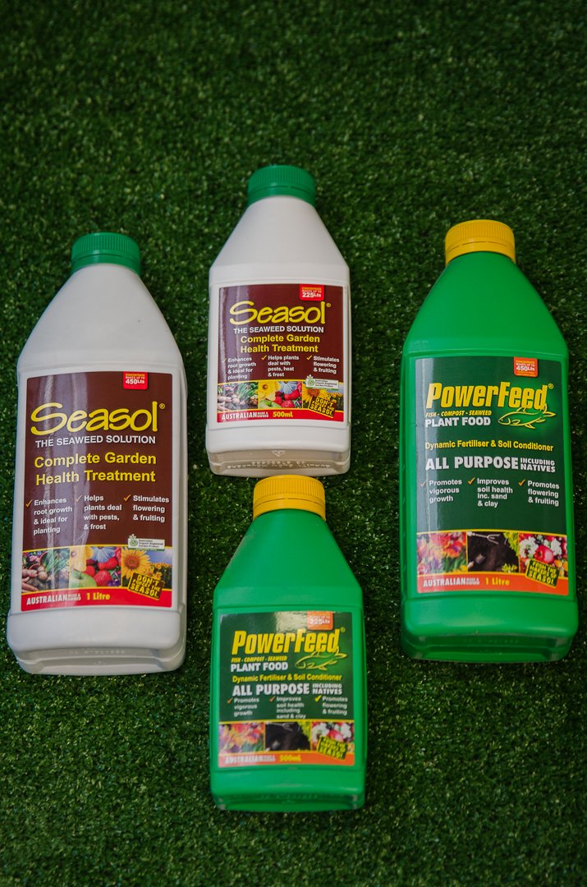
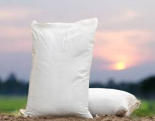
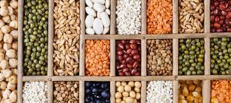

Importance Of Fertilizer
Organic Fertilizer

Use of organic fertilizers for farming helps in eliminating the unwanted and harmful contamination in the environment like surface water contaminations, underground water table, etc. They effectively help in the degradation of other natural substances present in the soil thereby enriching the soil contents.
Inorganic Fertilizer
Inorganic fertilizers are good for the rapid growth of plants because the nutrients are already water soluble. Therefore the effect is usually immediately and fast, contains all necessary nutrients that are ready to use.it can reduce the need for pesticides and the overall nitrogen, phosphorus and potassium requirements. good for growth of plants.
Fertilizer Bags
Fertilizer is one of the most important entity for the farms and before saving the crops, one should make sufficient efforts to save the fertilizers. ... The fertilizer bags must be handled carefully when they are being off loaded. Do not allow your laborers to use hooks. associated with reduction in some soil properties over time.
Seeds
Seeds are great sources of fiber. They also contain healthy monounsaturated fats, polyunsaturated fats and many important vitamins, minerals and antioxidants. When consumed as part of a healthy diet, seeds can help reduce blood sugar, cholesterol and blood pressure. Seeds are great sources of fiber.